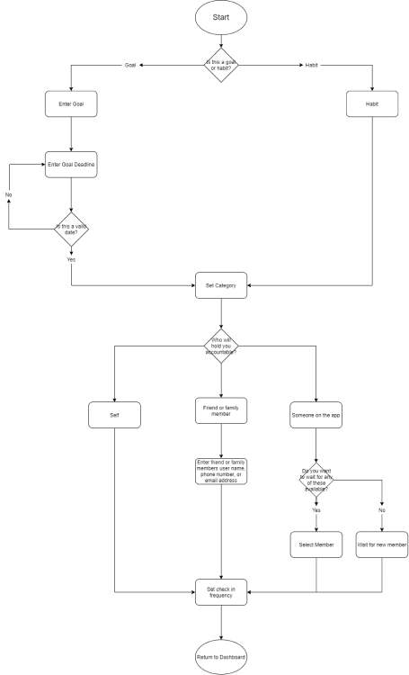

Achieve
Goal Achievement through
a customizable Social Experience
UX Research | UX Design | Visual Design | Brand Identity | Development
Desktop Prototype Tablet Prototype Mobile PrototypeUX Research | UX Design | Visual Design | Brand Identity | Development
Desktop Prototype Tablet Prototype Mobile PrototypeThe world today can feel very fast-paced. It is easy for a person to lose track of themselves to them and get caught in the shuffle. I realized organization is the key, and tasked myself with the idea to help people stick to their goals. With an app for almost everything, why isn’t there an accountability or goal-achievement app that stands out?
The problem for the individual is not having the time or motivation to complete a goal that you would like to achieve. People constantly set goals for themselves that can be achieved, but get side tracked.
After conducting extensive research Achieve was born. The Achieve experience varies from user to user, because of its variety of features. Some people require a social experience with support groups and a goalkeeper to keep on task, others just need a simple interface to keep track of their goals and statistics. Achieve is adaptable and focuses on each user’s needs.
I created a user survey asking the necessary questions to gain information about user experience with goal setting and achievement.
A sample of the questions asked were:
After analyzing the survey results and seeing the diversity in answers, I decided to conduct interviews.
some of the questions asked were:
These interviews helped me better define the different types of users within the survey. It cemented the idea that each user would use the app differently. Some people were best motivated by competition, while others felt that would cause too much anxiety. Some like the idea of having someone to check in on them, and others liked the idea of having a group they can talk with. User Personas were created from this information.
Competitive analysis was conducted to research what goal achievement apps are currently in the market, and why they aren’t as widely used.The Opportunities for achieve were discovered to be:
After gaining a better understanding of the users needs, as well as the strengths and weaknesses of the current market; user stories were conceived . The following list are items that were deemed high priority:
The next step was creating a potential sitemap was well as user flows to map out the best way to achieve each story. A successful user flow would be accomplished by having the simplest interactions while achieving the intended goal.
 View User Stories and FlowsWireframe sketches were created to get the basic ideas and fundamentals on the project onto paper.
My next task was to produce the content that would fill in my sketches and help guide the user stories and flows I created. Sticking to goals and habits can be hard work, so I wanted to make sure the user experience was a positive one. This is where my first realization of brand characteristics came in. I wanted the text to be conversational and light-hearted, too much rigidity would make it more work than help.
Once the sketches were complete they were turned into Digital Wireframes. Digital Wireframes were created in 4 different sizes: desktop, small screen, tablet, and mobile. My goal was to make sure that the app felt native on each screen size and would not be a compromised experience.

With the discovery of my brand characteristics, I created word lists and mind maps to assist in finding a brand name.
After a few different variations I realized the name Achieve would be perfect. It was simple enough by conveying the message of what the user’s experience would be, achieving their goals. I continued the idea of playfulness and positivity through my logo sketches. After a few basic sketches I decided to look for inspiration to complete the brand feel.
With the basic sketches and word association in mind, a mood board was created to complete the character of our product. I gravitated towards bright, bold colors that felt on target with positivity. I also wanted to make sure to keep onbrand with the idea of simplicity. With the name achieve being so positive, and I made sure to find images and designs that really made me feel like there was something to achieve.
After reviewing the moodboard, the colors that stood out were mainly pastels of blue and yellow. These colors lined up with the idea of playfulness, but I wanted to make sure to have contrast to make CTA buttons and important information really pop. I chose a darker purple which evokes the feeling of harmony and ambition, two words that complimented the characteristics of Achieve. The light gray would fill in nicely in areas that needed something a little different than a white background.
Pacifico was chosen for headlines because its rounded letters and handwriting-esque script feel very conversational and playful. Open Sans was chosen for the body, links, and other text. Its large variety of weights gives diversity to text leading to better hierarchy. It also was chosen because of its humanist detail and readability. This allows for the user to quickly and simply read information and allow for a stress-free environment. The combination of the two typefaces allows the user to clearly see hierarchy and make decisions rapidly.
When refining the logo, the main characteristics of positivity, playfulness, and simplicity came back into play. I experimented with the idea of adding an exclamation point to the name to give a bit more pop. This also gave some spark for logo variation. Ultimately I decided not to add the exclamation point, but play with the letting in the word. I saw the opportunity to use the v as a checkmark, but would not be able to do that with the script typeface of Pacifico. Open Sans also didn’t quite feel right, so I looked back at other typefaces I had considered for Headlines. I found Fredoka One, which was my initial choice, but was too close to OpenSans which led to some confusion in the layout. Although it was not the right fit for my headline text, It was perfect for the logo. It’s rounded-edges feel onbrand, and the purple put into the checkmark completes the look.
With all branding information near completion, a style guide was created for future reference. All rules from logos and iconography to colors and typeface were presented with key examples to give future designers the proper tools to succeed. Principles and Achieve’s vision are detailed in the front of the guide to inform the designer of the feel of the product.
The style guide was used as the instrument to paint the details of the wireframes template. I shared my mockups with other designers, to get their opinions as well as the initial flaws and correct the necessary details. When needed, I reflected back on the original sketches to find inspiration for modifications to the prototypes. The desktop prototype was created first and used as a model for the other sizes. I made sure each version was not just a watered-down, bare-minimum adaptation but a fully-functional experience. My goal was and is for the user to feel just as comfortable using the mobile app as the desktop.
Usability tests were conducted to test both desktop and mobile prototypes. I included a few participants that said they were not “great with technology” to see how the average user might interact with the application. More edits were made based on tests as well as my observation of the experience The vision of Achieve is to continuously evolve to the needs of the user. Never will a user HAVE to use certain features to get a full feeling experience with the app.
Version two of the dashboard modified the spacing in between the three main elements of Targets, Check-ins, and Progress, as well as better set the hierarchy of the check-in buttons. The recent communities cards were changed to have a similar feel to other cards in the app. Version three focused on the progress bars, and making them feel more complete. The light blue color can blend with the white background, especially if the user is color blind. I decided to make the gray of the bar a bit thicker to go around the blue, allowing progress to be visible, to those with visual impairments.
The goals page was similarly modified to give the check circle more visual hierarchy than the x. The progress bar colors were reversed to show blue as progress, and the gray bar was again made thicker to help make it more visually effective. Arrows were added next to Targets and Info to show that the element can be opened to reveal more information. An edit button was also added to allow the user to edit their goals after they are created.
Categories on the Communities pages were modified to allow for an easier reading experience.
The creation elements were modified to allow for better visual hierarchy. Although the purple showed the passive tab can be clicked, it made the user feel that it was the active tab. The gray shows the ability to be clicked, while not drawing too much attention. A passive state was also given to the CTA buttons to show when the user would be able to move on to the next step.
After seeing a bit of hesitation during my mobile test from a few users, I enlarged the new button (+ on the button the page) and gave more space around it to make sure it really pops. I also changed the spacing of the tabs on the bottom bar. When I moved the add new button, it changed the layout of the bar, making it feel inconsistent in spacing. I moved the tabs closer together as well as up a few pixels, so that the curvature of the iPhone does not cut off any text. The Achieve logo was removed from the top and replaced with the page name. This gives the user a better understanding of where they are, and they will not need the redundancy of the logo.

I decided to modify the closed element layout. Initially I had the end date, Goal keeper’s name, and how far the user is into the goal out of the total length of the goal. I left only the due date, as that is the most important information. The user can see if they are their own keeper depending on the checkboxes on that goal. This also gave me space to put in a down arrow, to represent that there is more information that can be seen, as well as an edit button for consistency with the Desktop and Tablet designs. I moved the information that I took out and added it to the additional information section in case the user wants to see it.
For version two, the "add" modal page was changed for mobile to update the new button size, as well as spacing of tabs with the rest of the pages. Version three, simply modified the size of the links, to make it feel less overwhelming. The larger size was easy to read, but almost felt like individual letters instead of words.

Mobile Call-to-action buttons were also modified to become more visually pleasing. The larger text size was a bit too overwhelming and took away from other fields on the page.
During my time building Achieve, I realized it evolved into a better
app than initially anticipated. Throughout my research and interaction with users, the discovered that Achieve is not only a goal seeking app, but a social experience. What helps many people stick to their goals is
the feeling of community or relatability; others need a bit of competition, or someone there to help remind them to keep on task. By taking the better parts of social media and combining it with a person’s drive and
determination to complete a goal is what will make Achieve successful, but also the user.
The most important aspect of Achieve is its flexibility. I feel the reason there have not been many successful goal achievement apps in the market, is that the creators have not been able to adapt the experience to the
user. Achieve allows the user to take advantage of the aspects they like, without compromising the fulfilled experience.
Avoiding scope creep was a bit of a struggle at times, but when re-evaluating and remembering Pareto’s Principle helped streamline the project to be a success. All of the information learned helped me become a better designer.
The experience of allowing an idea to evolve past my thoughts into something greater, will help mold my designs in the future. Allowing myself not to dictate the discovery, but let the research and experience guide me, gave me
the chance to produce a better app.